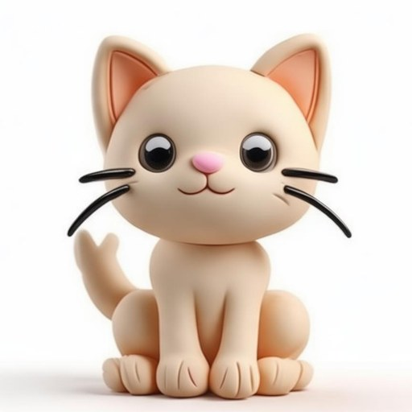
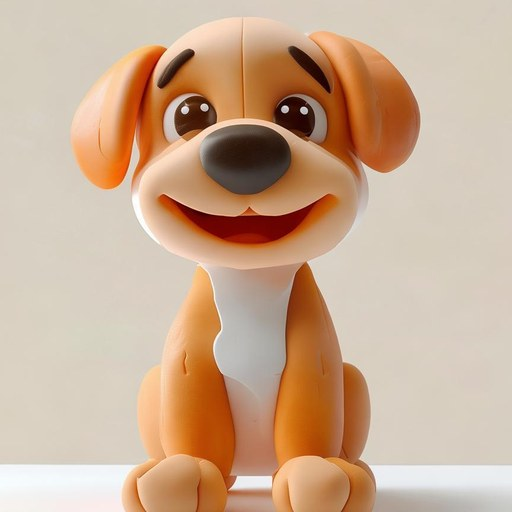
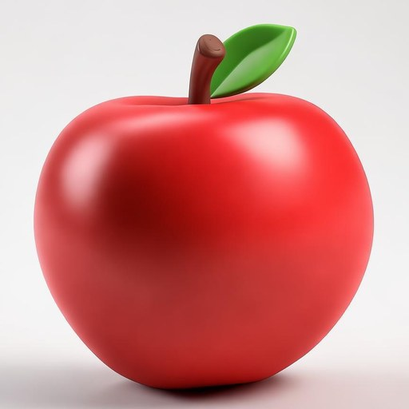
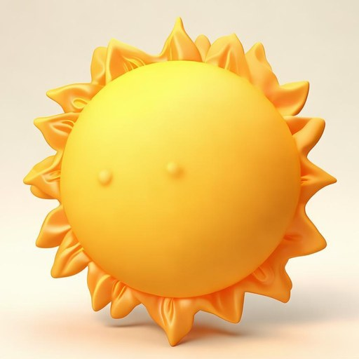
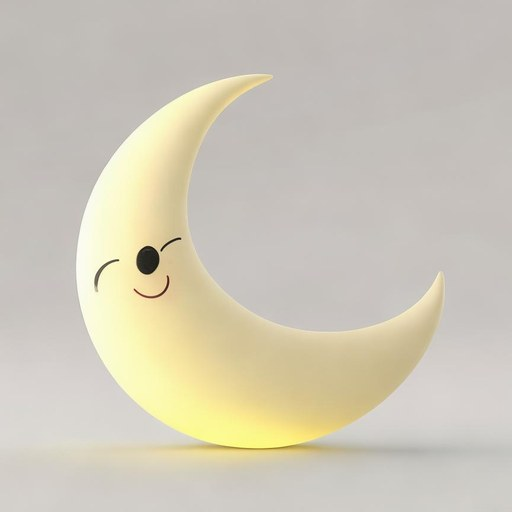
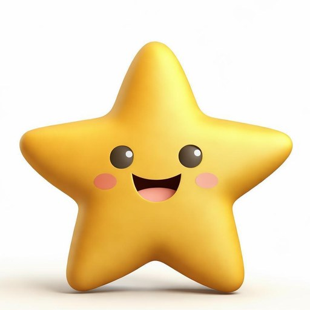
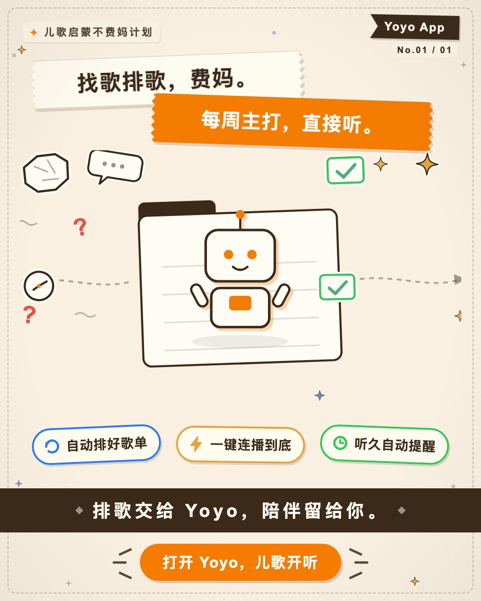

缘起与主张
家里娃快一岁了。市面上的启蒙 App 要么广告与订阅满天飞，要么内容黑箱不可控，于是自己动手写一个：以入学前六年为轴，1600 个单词按年龄逐步展开（覆盖牛津上海版小学英语 1A–5B 的词汇总量），每天一小步，六年走完。
架构主张：AI 只在内容工厂介入。大模型负责把 10 册教材变成干净的词库、例句、故事和插画；孩子面前运行的永远是确定性代码——没有联网、没有推荐流、没有不可预期的生成内容。
六个模块
| 模块 | 做什么 |
|---|---|
| SRS 间隔重复引擎 | 1→2→4→7→15→30 天回访序列，「主演（新词）+ 回访 + 客串」每日阵容；新词配额随年龄 0/1/2/3 变化，按正确率与反应时长自适应加减 |
| 家长每日练习页 | 今日阵容、指导语、出行日重排、打卡闭环——家长是真正的操作者 |
| 磨耳朵故事机 | 20 则自创场景故事逐句 TTS 朗读，锁屏后台续播，语速/音调/声音可调；满遍 ×3 自动换篇，连听 30 分钟自然边界暂停并提示家长 |
| 儿歌熏听排程 | 50 首儿歌按难度 D1–D3 螺旋推进（25 周一轮回卷），每日主打 2 + 回访 2，播放满 10 秒才计数；iOS / Android 桌面小组件一键起播今日歌单 |
| 亲子大图卡 | 全屏翻卡自动发音，按成长阶段倒计时锁定（防止娃无限划） |
| 孩子空间 | 听音辨图游戏、点读探索，均带每日时长上限 |
| 成长档案 | 阶段曲线、学习足迹、生活彩蛋记录 |
内容工厂：AI 在哪一步干活
一条 Python 流水线把 10 册教材 PDF 变成可用的学习内容，每一步有闸门：
| 工序 | 做法 |
|---|---|
| ① 教材提取 | Vision OCR 逐页提取词汇表，人工复核边界 |
| ② 词库加工 | 音标、释义、例句整理，按教材册次分层（1600 词 · 20 个场景） |
| ③ 质检闸门 | QC 脚本核查拼写/分层/重复，不过闸不入库 |
| ④ 插画工厂 | 智谱 CogView 批量生成黏土风单词插画，家长审定后入库（104 张成品，页面上这 6 张就是） |
| ⑤ 冻结内容包 | 内容打成 Bundle 随 App 分发——运行时零网络依赖 |
单词卡长什么样






十月迭代：Android 版从零到真机
10 月 2 日，Android 原生版一天六波从空目录装进真机：Kotlin 2 + Jetpack Compose + Material3，与 iOS 版逐波对齐——数据/逻辑层（logiccheck-K 25 项全绿）→ 家长端三 Tab → 儿歌音频引擎（ExoPlayer + MediaSession + 前台服务）→ 磨耳朵故事播放器 → 孩子空间 → 桌面小组件 + release 签名。此后持续真机打磨：Android 13+ 通知权限运行时申请、折叠屏适配、小组件 UI 重设计（响应式两档 + 暖色视觉）。
移植不是复制。逻辑判定层双端同源：同一套 SRS 配额、儿歌排程与收听边界判定，iOS 与 Android 各自实现、共享同一组断言——任何一侧漂移，验证器当场抓住。
同月落地的还有听觉研究四波：磨耳朵的「韵律好感输入」定位、连续收听 30 分钟自然边界、故事满遍 ×3 自动换篇、ListeningPolicy 纯判定抽成双端同源模块。以及一条小产线——儿歌功能宣传单页，设计决策表 + SVG 贴纸产线自动出图，和单词插画同一个思路：人定设计，机器出活。

工程质量
- SQLite 只增事件流水：对错、错误选项、反应时长全部落表，学习行为可完整回放——数据不是状态，是历史。
- 到期日保真重建：改任何历史记录，SRS 队列都能从事件流重建出完全一致的到期日。
- 双端逻辑验证器：iOS 与 Android 各 25 项逻辑断言——SRS 推进/退回、阵容重排、读写往返、配额曲线、儿歌排程、收听边界；双端同源约束入断言，防单侧改动漂移。另有 App 内六步自检与环境变量测试钩子。
- 审查修复任务书制度：0930 / 1001 / 1007 三份审查任务书归档入库，第八轮 17 项「应修未修」清单五波全部收口，每波独立提交、提交信息写明根因。
- 两次真机崩溃的诊断：iPhone SIGSEGV 无限递归爆栈、Android 冷启动深链前台服务超时闪退，各自从崩溃报告定位根因修复，完整过程留在 commit 历史里。
- 三端验证：macOS 实机、iOS 模拟器、iPhone 真机全部跑通。
开发时间轴
当天跑通流水线全链路：OCR 双引擎提取 10 册 104 页图词页、QC 五道闸、清洗打标、1600 词词图构建——先把内容地基打好，再写 App。
SRS 引擎、家长每日练习页、磨耳朵故事机、孩子空间成型；手写 xcodeproj 打通免费签名，App 装进 iPhone 真机；macOS / 模拟器 / 真机三端验证通过。
startSession 未归零 roundIndex，「下一轮↔开始会话」无限互递归爆栈。模拟器复现 .ips 定位根因：加空阵容守卫 + 语音合成器引用保留 + --selftest 诊断参数，真机 30 秒压测稳定。
儿歌板块上线（SSS 连播、难度分档、锁屏续播）；iOS 26 液态玻璃兼容层落地；桌面小组件（WidgetKit + App Intents）交付；同日修掉十余项：tab 图标不渲染、部署包套娃、播放页要点两次、进度条不动等。
新词配额误按会话构建次数生效——一次会话超发新词、家长页主演一天内漂移。新增 introducedToday 按天扣减，主演优先收当日已引入词，端到端验证器补按天扣减断言。
以第 8 件作品进 El Taller 作品集（本页），黏土单词插画首次公开。
前一日 meta 的 file 字段改存完整文件名后，查找端仍用去扩展名的词干——中文标题/难度/分区全丢，App 与小组件排程分歧。id 统一为完整文件名、三处查找对齐；同日修掉小组件跨周陈旧、播放失败半换死锁等四处 P1，故事与儿歌叠声互让补全。
Kotlin + Jetpack Compose + Material3 原生移植：数据/逻辑层（logiccheck-K 25 项全绿）→ 家长端三 Tab → 儿歌音频引擎（ExoPlayer + MediaSession 前台服务）→ 磨耳朵播放器 → 孩子空间 → 桌面小组件 + release 签名，装进真机。
Android 13+ 通知权限运行时申请、折叠屏（OriginOS）专属说明；iOS 小组件与宿主编译解耦，锁屏播放键路由改宿主注入。
17 项「应修未修」清单全部落地：Android 播放引擎 P1×3（自然播完无限循环、共享 player 双 owner 释放后崩溃、music_play 只读不写致回访排程成死代码）、小组件暂停态死按钮、孩子空间时长锁可绕过等；Android 真机重发包验证。
连听 30 分钟自然边界暂停 + 家长提示、故事满遍 ×3 自动换篇、磨耳朵「韵律好感输入」定位文案；ListeningPolicy 纯判定抽成双端同源模块，验证器同步扩容——Android 1.3 发布。
儿歌功能宣传单页：每周歌单票卡母题，设计决策表 + SVG 贴纸产线（HTML + JSON）出成品 PNG——人定设计，机器出活。
迭代计划
近期三件事：
- 干扰项升级：接入词图的易混淆对边——干扰项定向使用孩子真实混淆过的词（pink/purple 这类），让每次错误都更有信息量。
- 掌握判定多通道扩展：听 / 认 / 说分通道记录与判定，「说」的通道逐步启用。
- 词库核对收尾：CEFR 官方词表核对 + 全部词表页人工目检（内容工厂侧）。
中期——App 随孩子长大逐段解锁（六年里程碑）：
| 里程碑 | 内容 |
|---|---|
| M1 · 2027 上半年 | MVP 上 TestFlight，家长模式全量运转 |
| M2 · 2027–2028 | 孩子模式 v1（听音辨图 / 点读探索 / 儿歌互动）+ 儿歌内容包 |
| M3 · 2028–2029 | 每日场景系统 + SRS 主线 + 游戏库 + 记录系统全量运转 |
| M4 · 2029–2030 | 自然拼读 + 句型 + 家长 AI 周报 |
| M5 · 2030 起 | AI 对话陪练（端上）+ 毕业测评——入学前通过分层目标 |
这个项目没有用户增长目标，只有一个用户。给一个真实的、会长大的用户做产品，和给市场做产品，是完全不同的两种快乐。